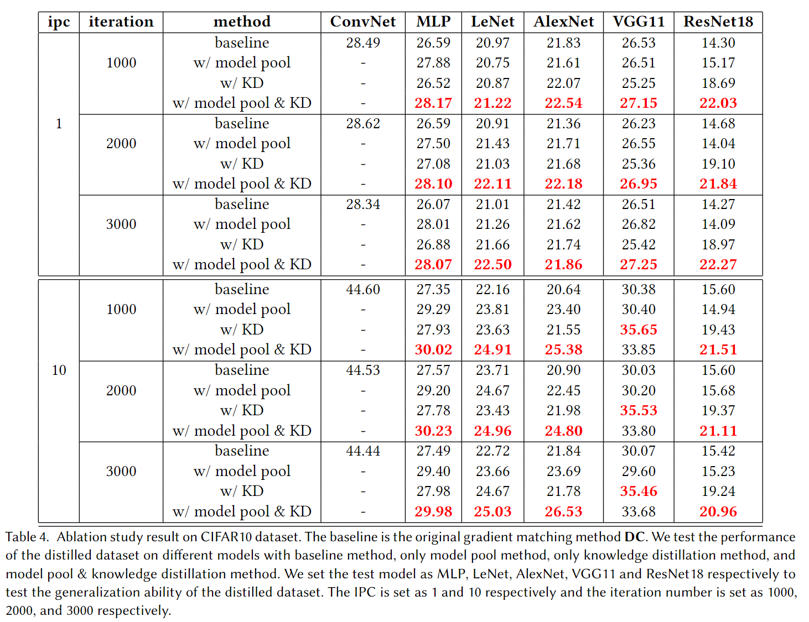
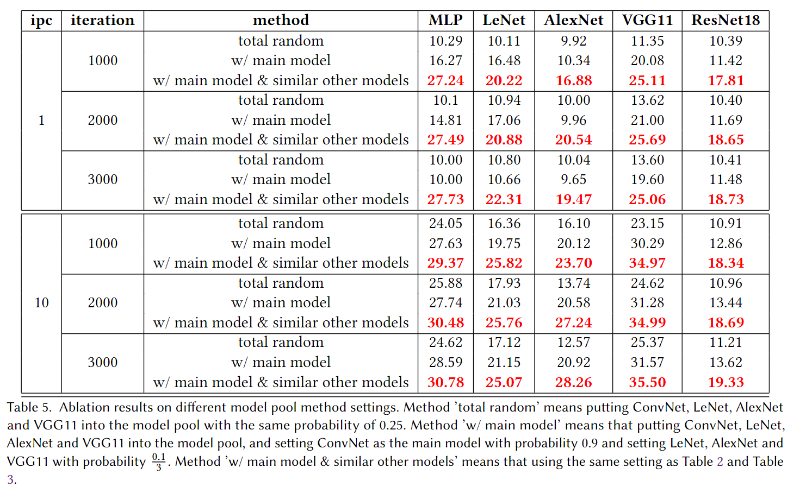

Improve Cross-Architecture Generalization on Dataset Distillation
BingLin Zhou Linhao Zhong Wentao chen
Shanghai Jiao Tong University
[Code]
Abstract
Dataset distillation, a pragmatic approach in machine learning, aims to create a smaller synthetic dataset from a larger existing dataset.
However, existing distillation methods primarily adopt a model-based paradigm, where the synthetic dataset inherits model-specific
biases, limiting its generalizability to alternative models. In response to this constraint, we propose a novel methodology termed
"model pool". This approach involves selecting models from a diverse model pool based on a specific probability distribution during
the data distillation process. Additionally, we integrate our model pool with the established knowledge distillation approach and apply
knowledge distillation to the test process of the distilled dataset. Our experimental results validate the effectiveness of the model pool
approach across a range of existing models while testing, demonstrating superior performance compared to existing methodologies.
Background
Given a particular subject such as clock (shown in the real images on the left), it is very challenging to generate it in different contexts with state-of-the-art text-to-image models, while maintaining high fidelity to its key visual features. Even with dozens of iterations over a text prompt that contains a detailed description of the appearance of the clock ("retro style yellow alarm clock with a white clock face and a yellow number three on the right part of the clock face in the jungle"), the Imagen model [Saharia et al., 2022] can't reconstruct its key visual features (third column). Furthermore, even models whose text embedding lies in a shared language-vision space and can create semantic variations of the image, such as DALL-E2 [Ramesh et al., 2022], can neither reconstruct the appearance of the given subject nor modify the context (second column). In contrast, our approach (right) can synthesize the clock with high fidelity and in new contexts ("a [V] clock in the jungle").

Approach
Our method takes as input a few images (typically 3-5 images suffice, based on our experiments) of a subject (e.g., a specific dog) and the corresponding class name (e.g. "dog"), and returns a fine-tuned/"personalized'' text-to-image model that encodes a unique identifier that refers to the subject. Then, at inference, we can implant the unique identifier in different sentences to synthesize the subjects in difference contexts.

Given ~3-5 images of a subject we fine tune a text-to-image diffusion in two steps: (a) fine tuning the low-resolution text-to-image model with the input images paired with a text prompt containing a unique identifier and the name of the class the subject belongs to (e.g., "A photo of a [T] dog”), in parallel, we apply a class-specific prior preservation loss, which leverages the semantic prior that the model has on the class and encourages it to generate diverse instances belong to the subject's class by injecting the class name in the text prompt (e.g., "A photo of a dog”). (b) fine-tuning the super resolution components with pairs of low-resolution and high-resolution images taken from our input images set, which enables us to maintain high-fidelity to small details of the subject.

Results
Ablation results for our method. We test the generalization ability of the distilled dataset on our model pool method and knowledge distillation method together and separately and compare them with the baseline method. 'ConvNet' is the main model in our model poolmethod, and we test the generalization ability of the distilled dataset on 'MLP', 'LeNet', 'AlexNet', 'VGG11', and 'ResNet18' respectively. We can see that our model pool method and knowledge distillation method together can cause a great improvement in the generalization ability of the distilled dataset compared with the baseline method.

Setting of Model Pool
Here are ablation results of different model pool method settings and we will show the reason why we use main model and similar other models in the experiment. We will show the result of three settings and the specific settings are mentioned in the table description. As we can see in the table, the third setting can achieve the best performance in all the cases and it’s largely better than the first setting and the second setting. Also, we will say some accuracies are equal to 10 and even lower than 10 in the first setting and the second setting. That is because the model pool is too various and the parameters are divergent in the training process. That’s why we use the third setting, which has a main model and similar other models, to experiment with the main part of this paper.

Acknowledgements:
We thank Cewu Lu and Yonglu Li for their patient guidance and help.